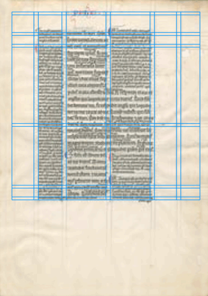

This grid is laid over that for the French bible created in 1190. The spacing and sizing are a little more consistent, given the improvements in the tools in the last 800 years, and it mimicks it well.
Back to column
